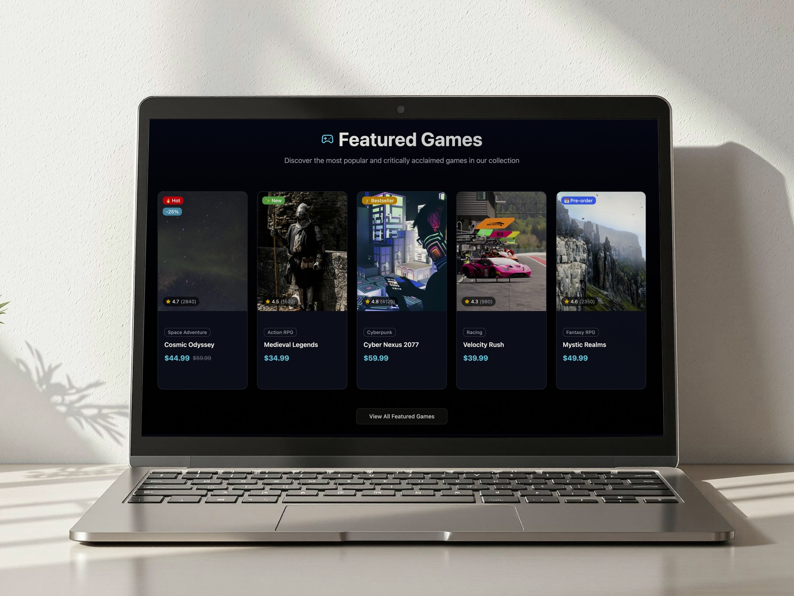
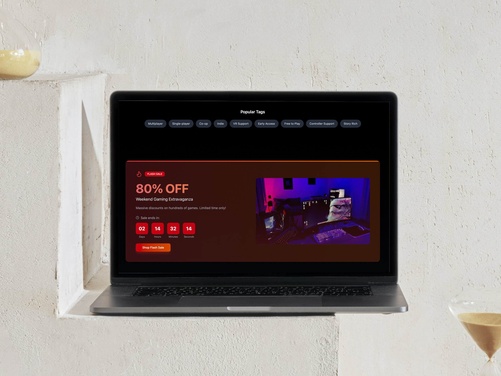
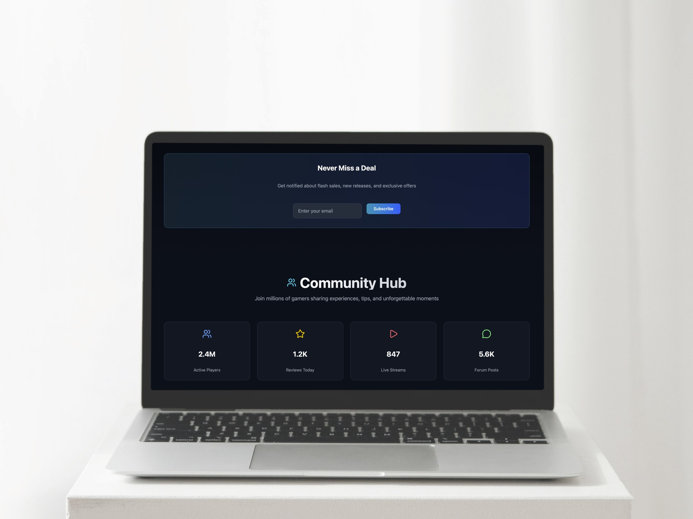

GameHub was born out of a personal passion for both gaming and digital product design. As a gamer and a frequent user of popular marketplaces like Steam and Epic Games, I saw a gap in how landing pages prioritize, promote, and market new game releases. Many platforms bury upcoming titles under trending or discounted sections, and their homepages can feel visually overwhelming rather than cinematic or immersive.
For GameHub, I set out to create a landing page that blends modern dark mode aesthetics, interactive animations, and a strong focus on new game drops—all while maintaining a streamlined user experience that draws users into the world of gaming from their very first click.



Competitive Analysis and Pain Points
Steam
Strengths: Massive catalog, strong community integration, robust wishlist and review systems.
Pain Points: Busy and cluttered homepage, insufficient focus on upcoming releases, often static and slow to load, lack of immersive media and animation.
Epic Games Store
Strengths: Simpler layout, frequent exclusives, focus on featured titles.
Pain Points: Sale banners can overshadow new launches, limited multimedia engagement, important releases sometimes lost in general grids.
GOG/Origin
Strengths: Combination of game management and community features.
Pain Points: Feeds become noisy, difficult to distinguish new releases visually, static UI/UX with little animation.
Key Issues Addressed by GameHub:
- New releases are often hidden, not immediately visible or market-focused.
- Visual clutter reduces excitement; many sections compete for attention.
- Little use of cinematic animation or media to create drama around game launches.
- Weak hierarchy: hard to find the most relevant or newest content on landing.
User Problems
- Difficulty instantly locating and exploring new game releases when landing on marketplace homepages.
- Overwhelming UI with too many competing CTAs and information blocks.
- Discovery only after navigating several sections, leading to missed opportunities for engagement or pre-order.
- Desire for interactive previews, animated trailers, and rich media without needing extra clicks.
- Lack of a modern, visually immersive experience that matches the excitement of the gaming world.
Solution and Design Approach
GameHub gives pride of place to new drops and upcoming launches with a dramatic hero section—full-width carousel featuring animated game art, countdowns, and instant CTAs (pre-order, wishlist, read more). Supporting sections showcase curated collections, active sales, game categories, and community highlights, arranged to keep user focus on the latest and most important releases.
Core Features & User Flow
- New Game Drops Spotlight
- Hero carousel with cinematic artwork, launch timers, and rich animation to build hype. Action buttons for pre-ordering or wishlisting are prominent and sticky.
- Featured and Trending Games
- Horizontal showcase of top-selling or critically acclaimed games with easy-to-access quick actions shown on hover.
- Curated Discovery Grid
- Animated filters for genre, price, and release date. Card-based design with animated previews, media, and hover interactions for instant engagement.
- Promotions and Sales Banner
- Banners for sales, bundles, or special offers with animated reveals. One-click access to full catalog.
- Game Categories
- Genre cards with custom icons and animated hover states for exploration.
- Community and Social Media Section
- Embedded interactive carousel for reviews, live streams, and discussion highlights—all animated and media-rich.
- Newsletter Signup and App Download
- Attention-grabbing animated CTA for subscription and downloads.
Visual and Interaction Design
- Modern, pitch-dark backgrounds and vibrant accent colors (electric blue, neon green) for readability and focus.
- Smooth transitions (fade, scale, parallax) and cinematic presentation for new release marketing.
- Large, bold typography that creates hierarchy; clear, touch-friendly interactive elements.
- Responsive layout for desktop and mobile; optimized images and preloaded media for speed.
- Accessibility ensured with high contrast, alt text, and keyboard navigation.
Outcome and Reflection
GameHub represents my vision for a next-generation gaming marketplace: immersive, interactive, and laser-focused on marketing and presenting new game launches with drama and excitement. By combining dark mode UI best practices, integrated animation, and a clear visual hierarchy, I created a compelling landing experience that maximizes user engagement with the freshest offerings on the market.